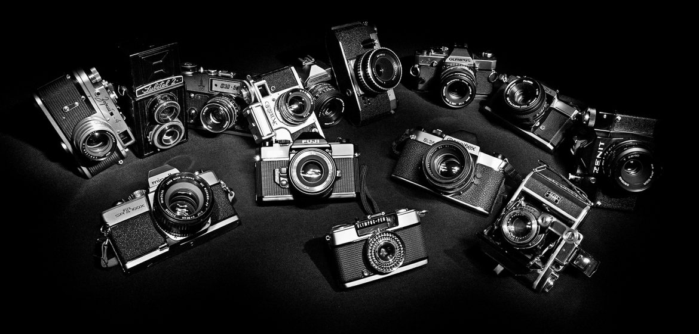

Fotografia este scoaterea la iveală a ordinii din haos. Fotografia este o imagine cu caracter magic de instantaneu.
Fotografia digitală a schimbat direcția generala a fotografiei obișnuite. Oricine are un aparat foto sau chiar un smartphone cu o cameră bună, poate realiza fotografii. Însă, există o diferență remarcabilă între fotografia clasică și arta fotografică. Gândește-te în felul următor: o fotografie clasică are rolul de a capta o amintire, un moment special sau pur și simplu ceva sau pe cineva frumos. În schimb, fotografiile artistice sunt, mai degrabă, varianta digitală a tablourilor. Fotograful se transformă încet, dar sigur, într-un artist plastic. Singura diferență este că nu utilizează vopsele și pensule, ci un aparat foto și diferite programe de editare. Arta fotografia presupune un pic mai mult decât a capta o imagine. Există mai multe tehnici și mai mulți pași pentru a realiza o astfel de fotografie, și nu oricine poate să facă acest lucru, dacă nu are o pregătire sau o chemare în acest sens.
Cei mai cunoscuți fotografi din întreaga lume
| Nume | Nationalitate |
|---|---|
| Jimmy Nelson | Britanic |
| Rehahn | Francez |
| Lee Jeffries | Britanic |
| Erik Almas | Norvegian |
| Joe McNally | American |
Pentru mai multe informații despre aceștia accesați:link text.
Putem observa câteva poze ale artistului Erik Almas pe blogul său personal care se gasește la adresa: link text.
Pentru înregistrare completați:
Fotografiile pot fi de variate feluri, dacă luăm în considerare tehnicile de fotografiere se regăsesc:
Prima fotografie a fost surprinsă în anul 1826 (unele surse spun 1827) de Joseph Nicéphore Niépce în Franța. Fotografia surprinde acoperișul unei clădiri luminate de soare. La început, fotografia se realiza prin camera obscură – un obiect ce proiecta o imagine printr-o gaură mică, oferind precizie artistului sau fotografului în captarea unei scene sau a unui obiect. Prima dată a fost folosită ca ajutor pentru desen în Magia Naturalis, un tratat științific al savantului italian Giambattista della Porta. Se crede că mulți experți din secolele XVII și XVIII, inclusiv Jan Vermeer (1632-75) și Canaletto (1697-1768), l-au folosit în schițele lor. Arta fotografică Atelierele ILBAH. Odată cu răspândirea fotografiei cu camera, începând cu 1840, utilizarea fotografiilor a devenit obișnuită atât în producția de artă a portretului, cât și în fotografia peisajului. Mulți pictori și portretiști au început să folosească noul mediu de fotografie în plus fata de modele, pentru a reduce timpul de lucru. Marele pictor realist american din secolul al XIX-lea, Thomas Eakins (1844-1916), de exemplu, a fost un pasionat utilizator al camerei, care a folosit fotografia că parte a căutării sale a realismului, mai degrabă decât că o scurtătură sau un ajutor pentru compoziție și perspectiva. Fotografia a fost folosită și de artiștii de peisaj – în special de pictorii francezi impresioniști, că ajutor pentru pictura în aer liber. În timp ce Stieglitz și Edward Steichen făceau tot posibilul pentru a promova fotografia că forma de artă completa, pictorialismul – primul stil major de arta fotografică – a devenit o moda înalta în rândul artiștilor cu obiective, la începutul secolului 20. Pictorialismul se referea la fotografii (de obicei visătoare, cu „focalizare ușoară”) care erau efectiv „create” în întuneric. În loc să înregistreze imaginea unui anumit subiect, fotograful a manipulat procesul de imprimare, pentru a crea efectul dorit. Pentru un cameraman pictorialist, munca la o fotografie era asemănătoare cu cea a unui pictor care își prelucrează panza, paleta și vopselurile. Printre cei mai renumiți fotografi picturali s-au numărat Man Ray, Alfred Stieglitz, Edward Steichen, F. Holland Day, Clarence H. White, William Notman, Sidney Carter, Constant Puyo, Pierre Dubreuil, Heinrich Kuhn, Hugo Henneberg, Ogawa Kazumasa, Harold Cazneaux și John Kauffmann. În zilele noastre, o ramură majora a ilustrației moderne în ziare, reviste și mass-media online este fotojurnalismul. A atras întotdeauna artiști cu aparate de fotografiat de mare calibru, capabili să creeze o narațiune picturală. Unii dintre cei mai mari fotoreporteri sunt: Don McCullin, Larry Burrows și Steve McCurry Robert Capa .
Prima fotografie din lume realizată din Joseph Nicéphore Niépce în Franța